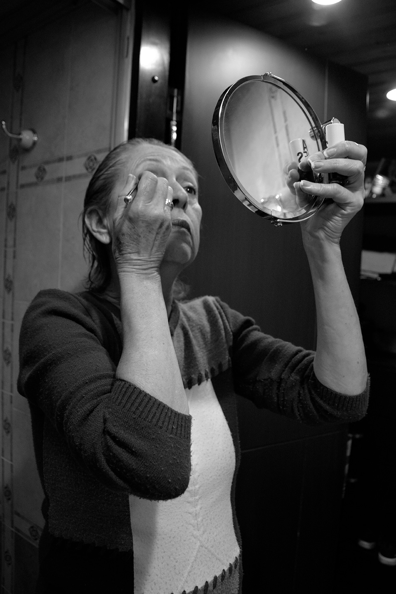
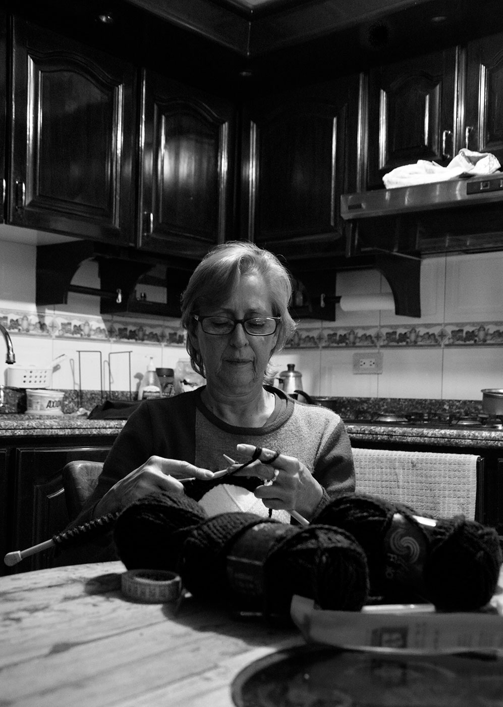
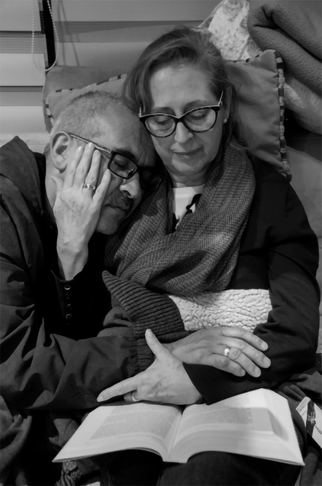

IF
Alrededor de mis 18 años de vida y desde que tengo memoria he escuchado todos los días a la misma hora, 3:55 am, las tres diferentes alarmas que mi madre programa a todo volumen y con distintos tonos para empezar su día laboral, incluso los fines de semana porque se le olvida desactivarlas; Patricia Eugenia Orejuela Bohórquez, es la matriarca de la familia Rincón Orejuela, es una mujer que ha trabajado arduamente durante y a lo largo de toda su vida, desde cuidar y hacerse cargo de sus hermanos, trabajar para pagarse sus estudios universitarios para obtener el título de enfermera profesional, hasta laborar sin parar para generar grandes aportes en su hogar a la vez que criaba a sus dos hijas, atendía a su esposo y administraba y organizaba el aseo en general. A pesar de tener 63 años y deber estar pensionada según como lo indica la ley colombiana, mi mamá se levanta todos los días a la misma hora para arreglarse con pantalones formales y zapatos de tacón, como está acostumbrada, y dirigirse al sistema masivo de transporte donde viaja cuarenta minutos en medio de una gran ola de personas y a veces sin poder agarrarse de los pasamanos de autobús con el fin de llegar a su trabajo en la 28 con 13 para cumplir su horario desde las 6 y media de la mañana hasta las 5 de la tarde, con 15 minutos para onces y una hora para almorzar; hace 34 años es una enfermera egresada de la Pontificia Universidad Javeriana de Bogotá, hace 27 años es enfermera auditora y desde hace 12 años trabaja en una empresa médica que se encarga de estudiar en las aseguradoras a las personas involucradas en accidentes; finaliza su jornada laboral de 9 horas en donde se queda horas extras para no dejar su trabajo inconcluso, y después devolverse exhausta en el mismo bus que la llevó en medio de la hora pico para organizar su almuerzo del día siguiente, cenar y ver su novelas todas las noches; siente que el tiempo no le alcanza para hacer todo lo que le gusta y sentirse productiva.
Ahora por las lamentables circunstancias por las que el mundo está atravesando, ha sido forzada, por un bien común, a trabajar desde nuestro hogar y a cambiar su usual rutina del día a día, cosa que tampoco ha sido fácil pero se le ha encontrado el pequeño gusto en ello siempre buscándole virtudes al asunto y dándole buena cara a la situación y a pesar de que le hace falta al ajetreo y al caos de la ciudad y de la oficina, en momentos como estos ha sabido manejar las cosas a su gusto y a su favor, ha encontrado más tiempo para ella, para realizar las cosas que le gustan e incluso para pasar más tiempo con nosotros. Coser que le enseñó la tía carlota, la hermana de su papá, tejer, que aprendió de las monjas de su primaria, bordar, que le enseñó su madre y todo lo que tenga que ver con telas, patronajes, hilos aguas, tambores, fileteadoras y máquinas de coser han sido su pasión artística desde joven, y tristemente por el estar encerrada en estos momentos, es que ha podido disfrutarlo más y de la manera que lo merece, ahora, después de que cierra sesión en su plataforma labora, a veces se sienta frente al televisor en el cuarto de música, pone su serie favorita del momento “Velvet” en Netflix y empieza a tejer puntada tras puntada de un sweater con sus dos agujas puntiagudas grises y sus 6 bolas de hilo rojo grueso; y a veces se sienta en el cuarto de visitas, que está organizado junto con todos sus instrumentos, a dibujar diferentes patrones, a coser con su máquina y a rematar en diferentes ropas.
Muchas veces nosotros le preguntamos que por qué sigue trabajando, que por qué en vez de esperar a que le llegue su pensión, no pasa su carta de renuncia para que por fin descanse y pueda hacer algo tranquilo y que le gusto después de todos estos años de trabajos y sacrificios, a lo que ella responde que su trabajo es necesario por el momento, y que por el momento no se puede dar el lujo de dejarlo. Y básicamente, esta es Patricia Eugenia, una mujer trabajadora, que es amorosa con su esposo, con el que lleva casado 27 años, y con sus dos hijas, que es apasionada y perseverante, que le gustan las cosas a su tiempo pero bien hechas, que transpira tranquilidad antes una situación de exasperación ajena, que se levanta todos los días a las 4 de la mañana para arreglarse e irse a trabajar para generar ingresos a su hogar; en pocas palabras una excelente mujer, una excelente madre, MI madre.
